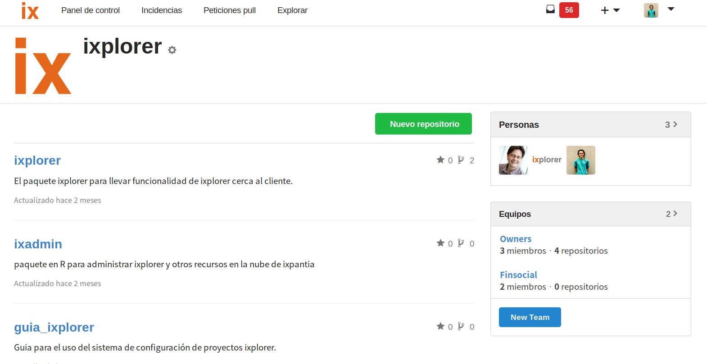
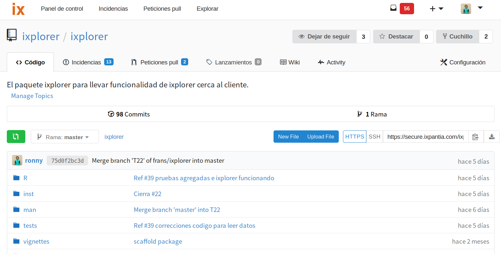

The aim of this dictionary is to provide you with short explanations about the main components of the ixplorer. This will help you with your everyday project workflow and communicate better with you Data Science team.
A project is your work subject where you try to reach specific goals. Within a project you can have several repositories up to your needs of organization.
A project can be for example a credit risk modelling and under this project you can have the exploratory_analysis repo, the model repository and the R package repository to keep code separated but code that it’s referred to the same topic.
The page of a project would like similar to this one:

A repository can be viewed as a folder where you keep all your files. This files can be share with other team members to start to collaborate on differente tickets.

There are ways to keep an organized repository either if you are working in a R package or in a single RStudio project with R files or others.
Our recommendation is:
Upstream is the standard name that we use to refer to the “central” repository which is the one that have the functional clean code. From this central repository everyone in the team have to make a fork from in order to work on their tickets.
This is a “copy” of the central repository. It’s going to be under your user name. You fork a repository when you want to contribute with code to the central repository. At the moment when you are ready to offer your improvements, you do a pull request. In your fork (unless you do a pull request) only your work is going to affect your forked repository, not the original one. You have to be aware that all the changes made in the upstream repository are not going to appear automatically in your fork unless you follow a process with git to update your project.
Tickets are made for document things that need to be donde inside a repository. Tickets can have differente categories:
A way to organize your project priorities, assigning tikects to each of the milestone that you define. An example of a milestone can be a release of a package.
The place of your repository where you can document, define and keep information needed to communicate to your team to solve doubts, to get informed about the project.
Release is made to establish a release of your code, or what it means: that you have a due date where all the code it’s ready so it has a review, clean and functional code.
All this code that can be an R package is labeled as a release so it marks an specific point on your git project history.